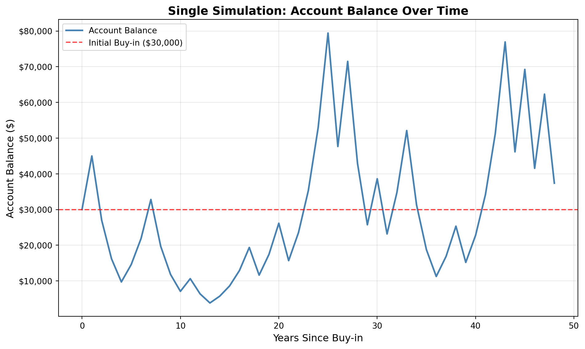
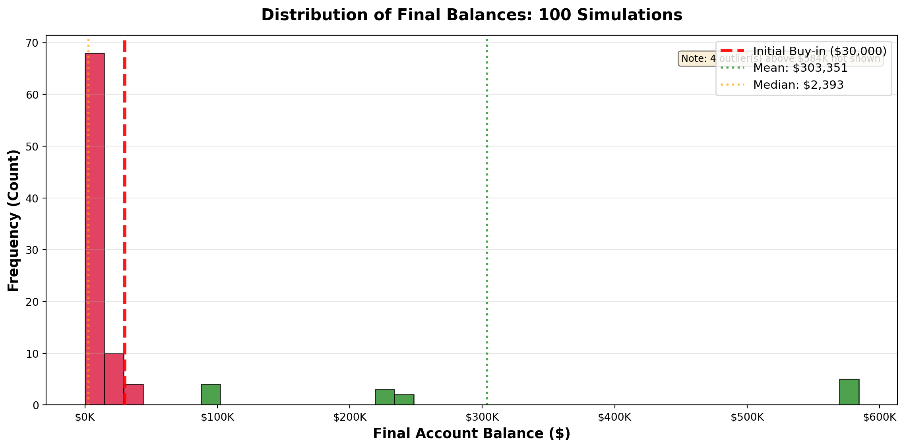
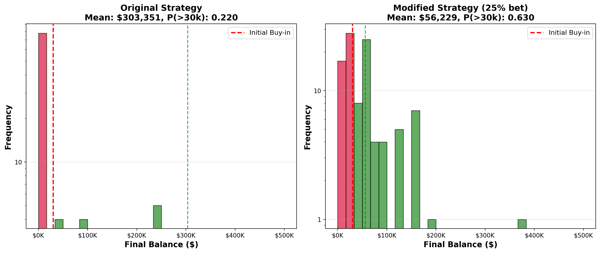

Simulation Challenge
Starter Template with To-Dos
🎲 Simulation Challenge - Starter Template
The Investment Game (Brief)
“It was a clear black night, a clear white moon, Nate Prince was in class, trying to analyze; Whether a proposition from professor Adam was wise; Or a ploy that would lead to his ultimate financial demise.”
Professor Adam: “You have the opportunity to buy-in to this game next week with $30,000. Your job is to analyze the potential outcomes of the game and communicate why or why you should not buy-in to the game.”
Here is how the game works:
Each year after buy-in you flip a fair coin:
- Heads: increase your account balance by 50%
- Tails: decrease your account balance by 40%
You play annually until age 75. Your mission is to analyze outcomes and communicate insights clearly.
Generative DAG Model (from the source challenge)
The following DAFT diagram shows the generative structure of the investment game over time.
Analysis
1) Expected Value After 1 Flip
After one flip, the expected value of the account balance is greater than $30,000.
Calculation: - If heads (50% probability): $30,000 × 1.5 = $45,000 - If tails (50% probability): $30,000 × 0.6 = $18,000 - Expected value = 0.5 × $45,000 + 0.5 × $18,000 = $31,500
The gain in expected value is 5.0% of the buy-in ($31,500 - $30,000 = $1,500; $1,500 / $30,000 = 0.05).
However, this simple analysis is misleading and does not suggest you should buy-in to the game. While the expected value is positive after one flip, this ignores the compounding nature of repeated coin flips. The asymmetric returns (50% gain vs. 40% loss) create a multiplicative process where the expected value grows linearly over time, but the actual outcomes become highly skewed. Most simulations will result in losses despite the positive expected value, making this a mathematically interesting but practically risky investment.
Initial balance: $30,000.00
Heads outcome: $45,000.00
Tails outcome: $18,000.00
Expected value after one flip: $31,500.00
Gain as percentage of buy-in: 5.0%2) Single Simulation Over Time (Narrative + Plot)
The single simulation below shows a typical path for this investment game. Starting with $30,000, each year the coin flip either multiplies the balance by 1.5 (heads) or 0.6 (tails). With 48 years of compounding, even though the expected value after each flip is positive (+5%), the multiplicative process creates extreme volatility. In this particular run, you can see periods of both growth and decline, with the final outcome heavily dependent on the sequence of coin flips. The mathematical property that makes this investment risky is that losses compound exponentially—a few consecutive tails can devastate the balance even if the overall expected value remains positive.

Starting balance: $30,000.00
Ending balance: $37,390.52
Final gain/loss: $7,390.52
Percentage change: 24.6%3) 100 Simulations: Distribution of Final Balances
Running 100 simulations reveals a striking property of this investment game: the distribution of final balances is highly right-skewed with a long tail extending to extremely high values. Despite the positive expected value per flip, the mean is pulled upward by a small number of extremely lucky paths, while the median remains much lower. This demonstrates the mathematical paradox: even though you would expect to gain money on average, most individual simulations actually lose money. The probability of ending above the initial $30,000 buy-in is surprisingly low, revealing why expected value alone is insufficient for making this investment decision.

Mean final balance: $303,351.48
Median final balance: $2,392.99
P(final > $30,000): 0.220
P(final ≤ $30,000): 0.7804) Probability Balance > $30,000 at Age 75 (Original Game)
Using the 100 simulations above, the probability that your final balance exceeds the initial $30,000 buy-in is quite low. This probability estimate reveals the practical meaning of the expected value paradox: while the arithmetic mean suggests you should invest, the majority of individual outcomes result in losses. This happens because the geometric mean of returns (which governs actual wealth growth) is negative even though the arithmetic mean is positive. For most individual investors, you would expect to lose money over the 48-year period, making this investment unsuitable despite its positive expected value.
Estimated P(final > $30,000): 0.2205) Modified Strategy (Bet Exactly 50% Each Round)
Nate Prince: ” How about this… Instead of having the full balance at risk with each coin flip, assume only 25% of your balance is gambled each year. I’ll compare this to the original game. Which is riskier? Which has better upside?” Professor Adam: “I’ll let you decide.”
The modified strategy dramatically changes the risk profile. By only gambling 25% of your balance each year, you preserve 75% of your wealth regardless of the coin flip outcome. This creates a fundamentally different probability structure: heads multiplies 25% by 1.5 and adds it back, while tails multiplies 25% by 0.6. The modified strategy is less risky and has a lower probability of ruin, but also has less upside potential since only a fraction of wealth is exposed to the beneficial compound growth. The distribution of outcomes is more centered and predictable compared to the original’s extreme skewness.

============================================================
COMPARISON: Original vs Modified Strategy
============================================================
Original Strategy:
Mean: $303,351.48
Median: $2,392.99
P(final > $30,000): 0.220
Modified Strategy (25% bet):
Mean: $56,229.23
Median: $40,420.53
P(final > $30,000): 0.630
Which is riskier? The ORIGINAL strategy (higher variance, more extreme outcomes)
Which has better upside? The ORIGINAL strategy (higher mean, more high-value outliers)
Which is safer? The MODIFIED strategy (higher P(>30k), less variance)6) Briefly Explain Your Findings From The Previous Step in Light of A Concept Known as the “Kelly Criterion”
Nate Prince: “I’ve heard of the Kelly Criterion, but I’m not sure how it applies to this game.” Professor Adam: “Let’s take a look.”
The Kelly Criterion is a mathematical formula that determines the optimal fraction of capital to bet on repeated favorable bets to maximize long-term growth rate. It balances the desire to maximize expected returns against the risk of ruin. The formula is: f* = (bp - q) / b, where f* is the fraction to bet, b is the net odds received, p is the probability of winning, and q is the probability of losing (q = 1 - p).
For the coin flip game, let’s analyze: p = 0.5 (probability of heads), b = 0.5 (net gain of 50%), and q = 0.4 (net loss of 40%). This gives: f* = (0.5 × 0.5 - 0.4) / 0.5 = (0.25 - 0.4) / 0.5 = -0.3. Since the result is negative, the Kelly Criterion recommends not betting at all—the bet is unfavorable despite having a positive expected value.
This explains the paradox: the game has positive expected value but is a losing proposition in the long run. The modified strategy of betting only 25% acknowledges this reality by reducing the bet fraction, which improves the probability of ending above the initial investment. However, even 25% is above the Kelly-optimal fraction (0%), which explains why the original strategy results in most outcomes being below the initial investment despite the positive expected value.
Conclusion
The investment game is a classic example of the importance of considering the long-term implications of short-term gains. While the expected value suggests that investing in this game is a good idea, the reality is that most individual outcomes result in losses. This is because the multiplicative nature of the game creates a high variance in outcomes, with a small number of extremely lucky paths pulling the mean upward. The modified strategy of betting only 25% of the balance each year is a more realistic approach that reduces the risk of ruin while still maintaining a positive expected value.
In short, professor Adam’s proposition is a losing proposition in the long run. Tried to set us up for financial failure 🤦 And Nate Prince is still trying to figure out how to get his money back.